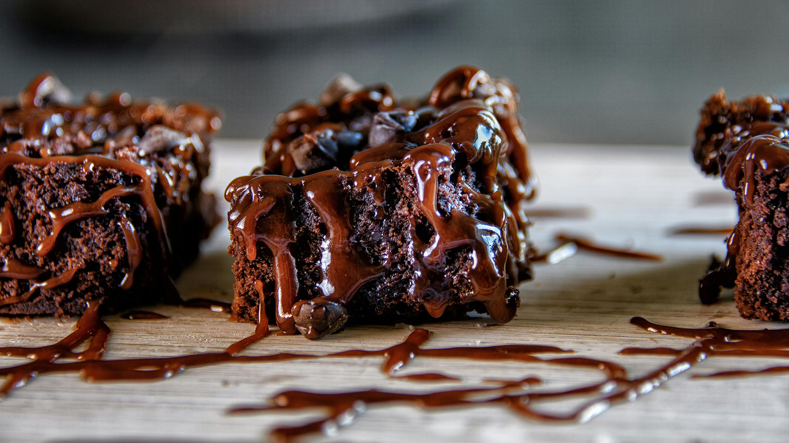

Brownies
Home

Image of delicious chocolate caramel brownies
Make delicious chocolate caramel brownies at home
In this recipe I will show you how you can bake delicious chocolate caramel brownies from the comfort of your own home. They are decadent, rich and everything you expect from a brownie.
These decadent dessert bars are layered with caramel, chocolate chips, and pecans. Home cooks praise the gooey, rich flavor of these brownie treats. Reviewer Tencents says, "Easy to make, but looks and tastes like you spent a lot of time!"
Ingredients
- 14 ounces caramels
- ½ cup evaporated milk
- 1 (15.25 ounce) package German chocolate cake mix
- ⅓ cup evaporated milk
- ¾ cup butter, melted
- ¼ cup chopped pecans
- 2 cups milk chocolate chips
Directions
- Peel caramels and place in a microwave-safe bowl. Stir in 1/2 cup evaporated milk. Heat and stir until all caramels are melted.
- Preheat oven to 350 degrees F (175 degrees C) Grease a 9x13 inch pan.
- In a large mixing bowl, mix together cake mix, 1/3 cup evaporated milk, melted butter, and chopped pecans. Place 1/2 of the batter in prepared baking pan.
- Bake for 8 minutes.
- Place the remaining batter into the fridge. Remove brownies from oven and sprinkle chocolate chips on top. Drizzle caramel sauce over chocolate chips. Remove brownie mix from refrigerator. Using a teaspoon, make small balls with the batter and smash flat. Very carefully, place on top of the caramel sauce until the top is completely covered.
- Bake for an additional 20 minutes. Remove and let cool.